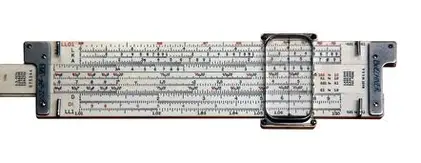

Early Devices & Mechanical Era: Flashcards
Abacus

Used for thousands of years across different civilisations, the abacus is one of the earliest known tools for performing arithmetic operations quickly and accurately.
Slide Rule
Invented by Blaise Pascal in 1642, this mechanical device could add and subtract using a series of gears and wheels.
Slide Rule

Invented in the 17th century, the slide rule was a vital tool for engineers and scientists, allowing rapid multiplication, division, and other calculations.
Pascal's Calculator (Pascaline)
Invented by Blaise Pascal in 1642, this mechanical device could add and subtract using a series of gears and wheels.
Jacquard's Loom

Developed in 1804 by Joseph-Marie Jacquard, this loom used punched cards to control weaving patterns automatically — an early example of programmable control.
Babbage’s Difference Engine
Designed in the 19th century by Charles Babbage, this revolutionary mechanical computing machine was built to calculate mathematical tables automatically.
Babbage's Analytical Engine
Also designed by Babbage, the Analytical Engine included features such as memory and a processor — earning it the title of the first conceptual programmable computer.
Turing Machine (1936)
Proposed by Alan Turing in 1936, the Turing Machine is a theoretical model of computation that describes how algorithms work and laid the foundation for modern computer science.
Z3 (1941)
Built by Konrad Zuse, the Z3 (1941) was the first programmable, automatic digital computer. It used electromechanical relays to perform calculations, marking a key transition between mechanical and electronic computing.
These early and mechanical devices mark the beginning of computing history, providing the ideas and mechanisms that would later influence electromechanical and electronic computers.